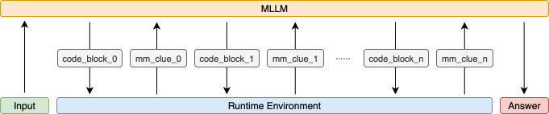

Introduction
The agentic AI paradigm is here. We've seen large language models (LLMs) evolve from pure text generators into capable agents that can plan, reason, and call external tools. But the real frontier isn't just using tools—it's inventing them. The ability to dynamically generate code tailored to a specific task is a foundational step toward more general intelligence.
This idea of composing tools has roots in computer vision, particularly in early neuro-symbolic work like Neural Module Networks. These models were great for transparency, producing inspectable outputs for each reasoning step. However, they were often constrained by predefined toolsets and single-turn execution, limiting their flexibility.
With the powerful coding and reasoning capabilities of modern Multimodal Large Language Models (MLLMs), we can finally break free from those constraints.
PyVision: An Agentic Framework for Dynamic Tooling
To explore this, we present PyVision, an interactive framework where an MLLM can autonomously generate, execute, and iteratively refine Python code in response to multimodal queries. We built PyVision on Python's rich library ecosystem and engineered a robust runtime environment to support a seamless, multi-turn dialogue between the MLLM (we used GPT-4.1 and Claude-4.0-Sonnet) and a Python interpreter.
This setup moves beyond simple function calling. The MLLM isn't picking from a static list of APIs; it's writing bespoke scripts from scratch to solve the visual task at hand.
Method

PyVision, an interactive and multi-turn framework capable of dynamic tool generation, designed for multi-modal reasoning. In an inference session, PyVision has n+1 interaction turns with the Python interpreter. code_block_i and mm_clue_i refer to the generated code by the MLLM and the executed output by the Python interpreter in the ith turn, i=0,1,...,n.
Results
Cases
All examples were generated by PyVision-GPT-4.1.
Bibtex
@article{zhao2025pyvision,
title={PyVision: Agentic Vision with Dynamic Tooling.},
author={Zhao, Shitian and Zhang, Haoquan and Lin, Shaoheng and Li, Ming and Wu, Qilong and Zhang, Kaipeng and Wei, Chen},
url={https://agents-x.space/pyvision/},
year={2025},
}